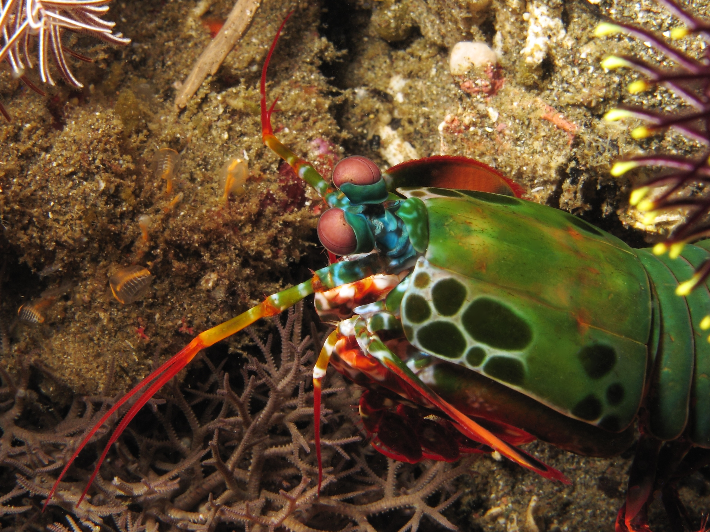

Odontodactylus Scyllarus:
O camarão-louva-a-deus-palhaço (Odontodactylus scyllarus), também conhecido como lagosta-boxeadora é uma espécie de tamarutaca nativa do Indo-Pacífico, de Guam até a África Oriental. Em aquários de água salgada, é uma atração tanto pela coloração quanto pelo Perigo.
| Reino: Animalia |
Filo: Crustacea |
| Classe: Malacostraca |
Subclasse: Hoplocarida |
| Ordem: Stomatopoda |
Família: Odontodactylidae |
| Género: Odontodactylus |
Espécie: O. scyllarus |
Ecologia

Odontodactylus scyllarus vive em tocas que constrói nos fundos dos corais, ou através de buracos deixados por outros animais, em rochas e substratos próximos de corais de recifes a cerca de 40 metros de profundidade
Habilidades de combate:

São capazes de desferir um dos mais rápidos e violentos golpes do reino animal, seu soco fora registrado com uma velocidade de 80 km/h e aceleração similar a uma arma calibre .22.
A pressão exercida pelo soco é de 60 kg/cm². Essa força esmagadora é a responsável pelo seu título de "lagosta-boxeadora" e é capaz de facilmente quebrar a carapaça de um caranguejo, as conchas duras e calcificadas de gastrópodes ou até mesmo quebrar o vidro reforçado de um aquário.